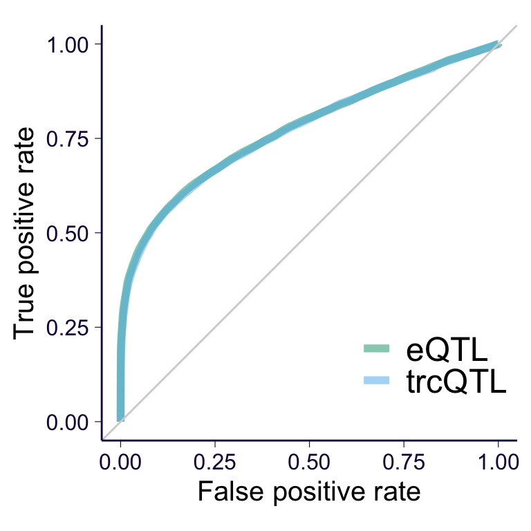

rm(list = ls())
library(dplyr)
library(data.table)
library(ggplot2)
library(SilverStandardPerformance)
library(patchwork)
options(datatable.fread.datatable = FALSE)
source('https://gist.githubusercontent.com/liangyy/43912b3ecab5d10c89f9d4b2669871c9/raw/3ca651cfa53ffccb8422f432561138a46e93710f/my_ggplot_theme.R')
source('https://gist.githubusercontent.com/liangyy/e580a36154586148cca7fd4cd973f502/raw/bad4364b1700662c7086fcdea191e42f530d0e2e/zval2pval.R')
source('../code/rlib_analysis.R')
cbPalette <- c('ascQTL' = "#999999", 'mixQTL' = "#E69F00", 'trcQTL' = "#56B4E9", 'eQTL' = "#009E73", "#F0E442", "#0072B2", "#D55E00", "#CC79A7")
datadir = '/Users/yanyul/Desktop/mixqtl-pipeline-results/postprocess-mixqtl'Here we meant to look at the power of eQTL and trcQTL on genes with low total count. To do so, we limit to the extreme cases where the gene has \(\le\) 50 reads in all 670 samples. (See processing script here).
In total, we end up with 912 genes. To compare the power, we rely on eQTLGen as silver standard. We randomly selected 100,000 variant/gene pairs from the pairs with p-value > 0.5 in eQTLGen (as negative instances). And similary, we selected 100,000 variant/gene pairs from the pairs with FDR < 0.05 in eQTLGen (as positive instances). The processing scripts are here (negative ones) and here (positive ones).
Some of the variant/gene pairs were not included in the GTEx cis-eQTL analysis (due to different definition on cis-window?). So, the final number of variant/gene pairs that go into analysis is less than 100,000.
To make a full comparison, we impute the zeros in the data with ones in the trcQTL calculation. And trc_cutoff = 1 is used in mixqtl call which essentially corresponds to use all data. The script used is here.
ll = data.frame(
prefix = c('Whole_Blood.allpairs', 'Whole_Blood-x-result-mixqtl_low_count_impute'),
method = c('eQTL', 'trcQTL'),
bcol = c(8, 4), # c(8, 13)
scol = c(9, 5), # c(9, 14)
vcol = c(2, 16),
gcol = c(1, 17)
)
out = list()
for(p in 1 : nrow(ll)) {
pre = ll$prefix[p]
b = ll$bcol[p]
s = ll$scol[p]
g = ll$gcol[p]
v = ll$vcol[p]
tag = ll$method[p]
for(i in c('pos', 'neg')) {
tmp_ = fread(cmd = paste0('zcat < ', datadir, '/', pre, '-IN-eqtlgen_', i, '_low_count.subsample100000-with-gene-low-expr.txt.gz'), header = TRUE)[, c(b, s, g, v)] %>% mutate(method = tag, type = i)
colnames(tmp_)[1:4] = c('bhat', 'se', 'gene', 'variant')
tmp_$gene = trim_dot(tmp_$gene)
out[[length(out) + 1]] = tmp_
}
}
out = do.call(rbind, out)
pairs_with_two_obs = out %>% group_by(gene, variant) %>% summarize(n = n()) %>% filter(n == 2) %>% select(gene, variant)
out = out %>% filter(paste(gene, variant) %in% paste(pairs_with_two_obs$gene, pairs_with_two_obs$variant))
out = out %>% mutate(stat = bhat / se)
out %>% group_by(method, type) %>% summarize(median(stat^2))## # A tibble: 4 x 3
## # Groups: method [2]
## method type `median(stat^2)`
## <fct> <chr> <dbl>
## 1 eQTL neg 0.457
## 2 eQTL pos 3.23
## 3 trcQTL neg 0.481
## 4 trcQTL pos 3.30curve = list()
curve2 = list()
for(m in unique(out$method)) {
df = out %>% filter(method == m)
trues = df %>% filter(type == 'pos') %>% mutate(pair = paste(gene, variant)) %>% pull(pair)
alls = df %>% mutate(pair = paste(gene, variant)) %>% pull(pair)
scores = df %>% mutate(score = stat ^ 2) %>% pull(score)
o = gen_roc_curve(
trues,
alls,
scores,
cutoff = quantile(scores, probs = 0:100 / 100)
) %>% mutate(method = m)
o2 = gen_fdr_power_curve(
trues,
alls,
scores,
cutoff = quantile(scores, probs = 0:100 / 100)
) %>% mutate(method = m)
curve[[length(curve) + 1]] = o
curve2[[length(curve2) + 1]] = o2
# %>% ggplot() + geom_path(aes(x = fpr, y = tpr))
}
p1 = do.call(rbind, curve) %>% ggplot() +
geom_path(aes(x = fpr, y = tpr, color = method), size = 2, alpha = 0.5) +
scale_color_manual(values = cbPalette) +
geom_abline(intercept = 0, slope = 1, color = 'lightgray') +
th + xlab('False positive rate') + ylab('True positive rate') +
theme(legend.position = c(0.8, 0.2), legend.title = element_blank(), legend.text = element_text(size = 18)) +
coord_equal()
p2 = do.call(rbind, curve2) %>% filter(precision != 0 & recall != 0) %>% ggplot() +
geom_path(aes(x = recall, y = precision, color = method), size = 2, alpha = 0.5) +
scale_color_manual(values = cbPalette) + theme(aspect.ratio = 1) +
xlab('Recall') + ylab('Precision') +
theme(legend.position = c(0.3, 0.2), legend.title = element_blank(), legend.text = element_text(size = 18)) +
th
p1
p2ggsave('../output/low_count_genes_ROC.png', p1, width = 4, height = 4)
ggsave('../output/low_count_genes_PR.png', p2, width = 4, height = 4)recode = function(x) {
x = as.character(x)
o = rep('negative', length(x))
o[x == 'pos'] = 'positive'
return(o)
}
p = out %>% reshape2::dcast(gene + variant + type ~ method, value.var = 'stat') %>% mutate(type = recode(type)) %>% ggplot() + geom_point(aes(x = eQTL, y = trcQTL), alpha = 0.2) + facet_wrap(~type) + th2 + geom_abline(slope = 1, intercept = 0, color = 'gray') + xlab('eQTL test statistic') + ylab('trcQTL test statistic') + coord_equal()
pggsave('../output/low_count_genes_test_stat.png', p, height = 4, width = 8)